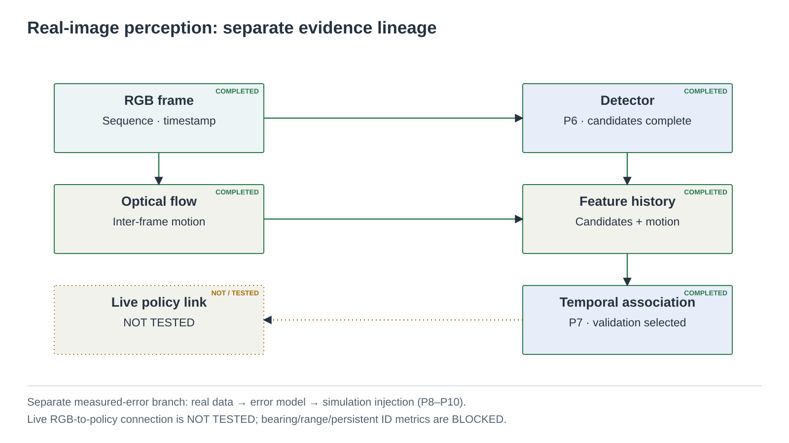
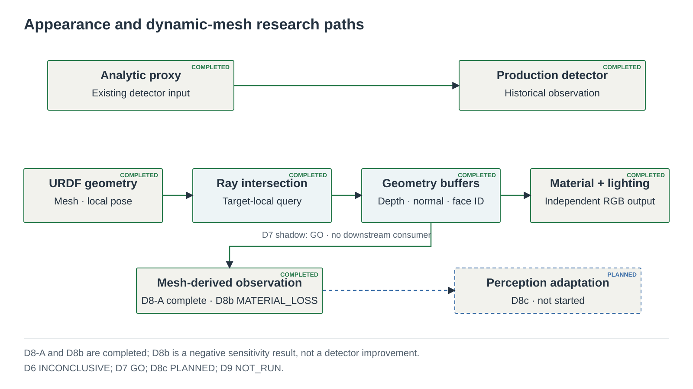
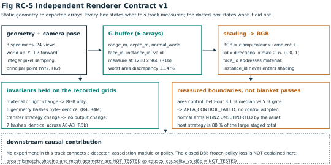

Research software · simulation study
MOTAR
Moving Object Tracking And Rendezvous
Reinforcement Learning for UAV Tracking and Close Approach in Random Obstacle Fields
Simulation-only UAV research on perception, tracking,
obstacle-aware navigation, and close approach.
Abstract
MOTAR is a simulation-only research repository for studying perception-aware motion toward moving objects in dense obstacle fields. It combines a documented UAV dynamics and control stack with camera and LiDAR observation models, structured temporal policy inputs, and diagnostic safety-filter variants. A separate real-image lineage measures detector and temporal-association errors and supports empirical error injection into simulation; it has not been validated as a live, end-to-end flight perception stack. The appearance track separates asset geometry, independent shading experiments, dynamic-mesh feasibility, and a read-only shadow-cost probe. Across these tracks, preregistrations, source and environment receipts, negative outcomes, and withdrawn claims are preserved alongside positive evidence. The current repository therefore provides bounded evidence about simulation behavior, measured perception uncertainty, filter geometry, and renderer engineering. It does not establish real-flight performance, sim-to-real transfer, reliable persistent instance identity, appearance-shortcut reduction, or deployment readiness.

1 Introduction
1.1 Problem
MOTAR studies how a simulated UAV can use sensor-derived observations to detect and temporally associate a moving object, navigate through dense obstacles, and reach a close-approach condition. Historical experiment names such as interception and capture retain their original labels and meanings; the public term rendezvous does not reinterpret those results.
1.2 Why the problem is difficult
- Limited visibility. The object may occupy very few image pixels and may be obscured by clutter.
- Perception uncertainty. Detection, association, range proxy, reacquisition, and latency errors are temporally dependent.
- Navigation–collision tension. Commands that reduce target separation may increase obstacle-contact risk.
1.3 Contributions
- Measurement of detector and temporal-association errors on real UAV imagery, with a separate empirical simulation-injection lineage.
- Diagnosis of safety-filter geometry and failure modes in dense-obstacle simulation, without treating the result as a safety certificate.
- Validation of asset, appearance, and dynamic-mesh shadow paths while preserving the boundary between debug rendering and production observations.
- Preregistration- and receipt-based experiment records that retain negative, inconclusive, and withdrawn findings.
2 Research Environment
2.1 Simulation environment
The interactive scene below is a browser explanation of the research arena. It is not a recorded PPO rollout, PhysX replay, or performance measurement.
Figure 2
Loading 3D arena…
Browser GT preview details
Browser GT Tracking Preview: exact browser target state and obstacle AABBs are used only to draw an explanatory chase. The default INTERCEPTION EPISODE runs chase → close approach → intercept and ends on capture (the task's 0.5 m success radius, swept between steps) or on the task's episode budget (600 steps × 0.1 s = 60 s), then holds the outcome and starts a new episode. CONTINUOUS TRACKING keeps the 1.55 m display standoff with no capture. Browser interception preview mirrors the task termination semantics, but is not PPO or PhysX performance evidence. This is not the PPO policy, not PhysX, not TM-E3, and not a performance measurement. Historical local-heuristic and TM-E2 routed-preview modes remain available. Click/tap the ground in CLICK GOAL to send the target; invalid clicks are rejected.
2.2 Target motion
A question the demo above raises immediately: what algorithm moves the target? In the browser preview the target is not a point drifting through obstacles. It selects a destination it can actually reach, plans a route that never crosses an inflated obstacle, and follows that route under speed, acceleration and heading-rate limits. On arrival it selects another. If no safe route exists it stops and replans rather than clipping through a bar.
Browser visualization only. The research simulator contains separate historical target-motion lineages, and they do not share this planner. In particular the obstacle-aware research target (TM-E2) is a local receding-horizon executor and does not use the browser preview's A* global route. No target lineage reacts to the pursuer's position: obstacle-aware is not the same as adversarial, and the reactive and learned evader levels remain PLANNED. The target's privileged obstacle geometry is never passed to the policy observation. This preview is not PPO, not PhysX, and not a performance measurement.
How does the target move? — full algorithm, per lineage → · Target behavior ladder (TM-E0…E4)
2.3 Platform and sensors
| Component | Role | Boundary |
|---|---|---|
| RGB-D camera | Forward image/depth observation | Default render and detector resolutions are lineage-dependent |
| LiDAR | 360° obstacle range input | Full scan differs from the 240° proposal-selection sector |
| Ego state | Velocity, yaw rate, and height features | Simulation state; not real-flight telemetry evidence |
| Actuation | Bounded velocity/yaw command to fixed controller | Configured simulation dynamics |
3 System Architecture
Long-range target perception is camera-based; MOTAR does not assume LiDAR target ranging.
This is the intended sensor-only research decomposition, not a completed live real-image-to-policy pipeline. P8/P9 error measurement and injection are complete; the live connection remains NOT TESTED. Historical non-vision LiDAR baselines that inject a simulator GT goal frame are a separate contract and are not sensor-only evidence.
Lifecycle state and evidence verdict are separate. A completed experiment can retain an
INCONCLUSIVE, FAIL, or MATERIAL_LOSS verdict.
| Component | Lifecycle | Evidence verdict | Boundary |
|---|---|---|---|
| P6 detector candidate preparation | Loading… | Loading… | Completed input preparation for the frozen temporal comparison. |
| P7 temporal selector | Loading… | Loading… | Validation-selected; S4 generalization warning remains. |
| P8 measured perception error | Loading… | Loading… | Dataset- and lineage-specific. |
| P9 empirical simulation injection | Loading… | Loading… | Not live real-image policy integration. |
| P10 policy readaptation | Loading… | Loading… | Completed study; net adaptation benefit not established. |
| Live real-image selector → policy | Loading… | Loading… | No validated end-to-end live RGB connection. |
| Camera bearing in degrees | Loading… | Loading… | Required camera-intrinsic support is unavailable in the cited evaluation. |
| True metric target range | Loading… | Loading… | Available size proxy is not reliable per-frame range GT. |
| Persistent physical ID-switch rate | Loading… | Loading… | Dataset does not provide the required persistent target identity. |
| SAM-in-simulator candidate | Loading… | Loading… | Historical proposal retained, not the active perception direction. |
| D8-A mesh observation technical gate | Loading… | Loading… | Technical integrity/cost only. |
| D8b frozen-policy sensitivity | Loading… | Loading… | Completed negative result; renderer-defect causality not tested. |
| D8c perception adaptation | Loading… | Loading… | No implementation or result. |
| D9 shortcut remeasurement | Loading… | Loading… | Appearance/motion shortcut reduction remains unmeasured. |
3.1 High-level control pipeline
As shown in Fig. 3, existing simulation sensing is converted into a structured observation before the temporal policy produces a bounded command. A configured safety-filter arm may constrain that command before the fixed low-level controller and rigid-body simulation. Filter activation and observation content are experiment-lineage specific.

3.2 Low-level perception and tracking
The real-image streaming pipeline runs a frozen detector and optical flow, assembles candidate and motion features, and returns a frame-local candidate rank or no-selection result. It does not by itself establish persistent physical identity or a metric target state. Consequently, the policy-observation connection in Fig. 4 is dotted and labeled NOT TESTED, not dashed as a generic future plan.

3.3 Safety filter
Figure 5 separates the nominal policy command from LiDAR-derived geometry. Risk/cap-law and arc-clearance geometry are comparison axes, not a stack of sequential planners. The output preserves the requested horizontal direction while constraining magnitude under the selected experiment configuration.

3.4 Appearance and rendering
The production detector still consumes the established analytic-proxy observation. Independent appearance tools can derive depth, normals, face IDs, material variation, and lighting variation from geometry. D7 adds a read-only shadow query beside production; it does not route the shadow buffer into the detector.

The independent renderer track is frozen at Contract v1. The summary below is the whole of it: a characterization record, not a blanket renderer pass, and it tests no causal link to the D8b result. Details are on the renderer contract page.
| Property | Status |
|---|---|
| Ray/mesh intersection | Verified |
| Measurement resolution | 1280×960 qualified |
| Multi-view area control | Not adopted |
| Normal model | Face normal only |
| Lighting/material invariance | Verified |
| Host transfer | Characterized |
| D8b causality | Not tested |

4 Experimental Setup
4.1 Main parameters
Table 1 reports the principal documented configuration rather than one universal runtime state. Defaults, canonical historical settings, and individual benchmark cells are labeled separately; the receipt for a run remains authoritative.
| Category | Parameter | Value | Applicability |
|---|---|---|---|
| Environment | Arena | 40 × 40 × 3 m | Fresh research lineage; source default XY is 24 m |
| Environment | Obstacle densities | 70 / 115 / 160 / 205 | Named canonical density knots; 300 is separate stress |
| Camera | Resolution / HFOV | 160 × 90 / 87° | Source defaults; overrides recorded per run |
| LiDAR | Rays / range | 4 × 72 / 12 m | Canonical perception contract; source defaults are 4 × 36 / 4 m |
| Vehicle | Mass / motor lag | 1.20 kg / 0.04 s | ref5in simulation candidate; not measured hardware |
| Vehicle | Command speed / tilt | 2.5 m/s / 45° | Historical contract; current source default speed is 2.0 m/s |
| Policy | Observation | 898-D / 17 tokens | Canonical historical policy contract |
| Learning | Architecture | Transformer / PPO | Historical policy; distinct from association Transformer |
| Runtime | Parallel environments | 256 default / 128 D7 | Source default versus D7 primary benchmark cell |
Parameter provenance: source map · system specification.
4.2 External datasets
| Dataset | Role | Key boundary |
|---|---|---|
| NPS-Drones | Detector and temporal evaluation | No metric range ground truth |
| Det-Fly | Cross-domain detector evaluation | Separate hosted-image redistribution terms not established |
| ETH ds5 | Size–range and pose-reliability analysis | Timestamp/pose limitations constrain causal interpretation; dataset obtained separately, not redistributed in the current tree |
5 Algorithms
Figures 3–6 organize the implemented methods by role; they are not one validated end-to-end real-image flight pipeline.
5.1 Perception
The real-image lineage combines a frozen detector, Top-K candidates, optical flow, global-motion features, and temporal association. A Kalman filter, GRU, and Transformer were evaluated as alternatives over the same detector lineage; frame-local association remains distinct from reliable persistent identity.
5.2 Reinforcement learning
The historical simulation policy uses PPO with a Transformer over structured sensor and history tokens. Its actor observation excludes privileged target ground truth; centralized critic and evaluation supervision have separate roles.
5.3 Safety
LiDAR-derived clearance and stopping-risk estimates can limit commanded speed while retaining direction. Straight-corridor and arc-clearance formulations are experimental comparison arms, and neither is a collision-avoidance certificate.
5.4 Rendering
Warp ray queries support analytic target proxies, static-scene geometry, and independent mesh/appearance studies. Normal, material, and lighting tools are separated from the production observation path; D7 only measures an attached shadow query.
5.5 Target-behavior difficulty
The target is an independent benchmark axis. Evader may use privileged GT obstacle information; pursuer may not. Existing target behavior does not receive pursuer state after reset. The explicit TM-E0–TM-E4 ladder avoids collision with the existing E3 range-study names.
| Level | Behavior | Lifecycle | Evidence boundary |
|---|---|---|---|
| TM-E0 | Static target | Loading… | Loading… |
| TM-E1 | Constant-velocity target | Loading… | Loading… |
| TM-E2 | Obstacle-aware scripted target; privileged obstacle GT | Loading… | Loading… |
| TM-E3 | Reactive obstacle-aware evader | Loading… | Loading… |
| TM-E4 | Learned evader / self-play | Loading… | Loading… |
Current motion law, defects, information boundary, and implementation contract. No E0/E1/E2 policy-performance grid is reported.
6 Evidence and Current Results
6.1 Quantitative comparison with matched baselines
These are within-repository matched-baseline comparisons. They do not establish superiority over published external systems or state-of-the-art methods. pp means percentage points. Each effect stays inside its cited data, evaluation, seed/checkpoint and metric contract.
| Research axis | Matched baseline | MOTAR treatment | Numerical difference | Verdict | Scope / limitation |
|---|---|---|---|---|---|
| Safety-filter geometry | riskcap | arc-clearance speed filter | Crash −1.4903 pp; 95% CI [−1.8981, −1.0826]; lower crash in 15/15 cells | Confirmed configured contrast | No formal collision-safety guarantee or general DWA superiority. Source |
| Arc geometry width | 0.45 m half-width | 1.2 m half-width at 205 bars | Crash −5.60 pp; capture +4.44 pp | Geometry-specific improvement | Arc only; the same widening degrades straight stopcap capture. Source |
| Riskcap policy adaptation | Frozen source + riskcap | Adapted + riskcap | Capture +3.75 pp, 95% CI [+1.30, +6.19]; crash −2.14 pp, CI [−4.42, +0.15] | Capture supported; crash not confirmed | Uniform seed-45 contract; crash interval contains zero. Source |
| Latency compensation | 0.1 s raw latency | Ego-motion-corrected P3 | Capture 37.82% → 78.04% (+40.21 pp) | GO in the registered contract | Does not establish that real-world latency is solved. Source |
| Learned detector navigation | Analytic detector | Learned detector v2 | Capture −0.015 pp; 95% CI [−1.752, +1.723] | Non-inferiority PASS | −2 pp margin; this is not superiority. Source |
| Temporal perception selector | CNN-only validation utility 0.6655 | Transformer validation utility 0.6725 | +0.00697 utility | Selected on validation | Not held-out superiority; S4 test utility 0.4701 retains its generalization warning. Source |
| P10 policy readaptation | Frozen source under measured error | Readapted policy under measured error | Mean +0.73 pp; 95% CI [−1.04, +2.50] | INCONCLUSIVE | Net adaptation benefit is not established. Source |
| D8b mesh observation | Analytic observation | Mesh-shaded observation | Capture −48.967 pp; 95% seed-t CI [−50.113, −47.821] | MATERIAL_LOSS | Same frozen policy; causality of any renderer defect is NOT_TESTED. Source |
6.2 Relation to published systems
Class A requires the same benchmark and metric; Class B has public code that could become a future preregistered port; Class C supports architectural comparison only. No selected work is currently Class A, so no external percentage is subtracted from a MOTAR result. “Dynamic obstacles” excludes the tracked target/evader itself.
| Work | Target pursuit / tracking | Static / random obstacles | Dynamic obstacles | Perception | Method / temporal tracking | Same benchmark? | Class / what MOTAR can borrow |
|---|---|---|---|---|---|---|---|
| NavRL / NavRL++ | Goal navigation, not core pursuit | Randomized clutter | NavRL tracks moving obstacles | RGB-D + state | PPO, Kalman obstacle tracks, VO shield; ++ adds temporal/perturbation training | No | B/C · closest open PPO safety port; ++ code not verified |
| YOPO / YOPOv2-Tracker | YOPO: no; Tracker: fast target tracking | Dense sim/real clutter | No established non-target dynamic benchmark | Depth / RGB-D | Guidance-learned primitives; Tracker adds objectness, EKF and temporal consistency | No | B/C · planner port candidate; closest unified tracker code unreleased |
| OPEN | Multi-UAV pursuit-evasion | Randomized unknown environments | Evader only | Relative state + LOS mask | MAPPO, LSTM evader prediction, adaptive curriculum, CTBR | No | B · open pursuit port and automatic difficulty curriculum |
| AgilePE | Bilateral pursuit-evasion | Not MOTAR dense bars | Evader only | Onboard state | Self-play, FSP/PFSP opponent pools, CTBR | No | C · TM-E4 cross-play design; no verified code |
| Fast-Tracker | Agile target tracking | Random clutter | Not demonstrated | Cameras/AprilTag + depth map | EKF/FIFO history, Bézier prediction, kinodynamic planning | No | B · classical prediction/reacquisition comparator |
| Elastic Tracker | Aerial target tracking | Clutter/occlusion corridors | No non-target dynamic benchmark | Depth map + target camera | EKF prediction, visibility-aware search and optimization | No | B · separates tracking visibility from navigation safety |
| MAD | No pursuit | Random geometric/forest clutter | Qualitative pedestrian test only | Depth + proprioception/VIO | Recurrent occupancy/visibility world model | No | C · visible-free/occupied/unknown spatial-memory ablations |
| PILOT | No pursuit | Random clutter/gates | No demonstrated dynamic benchmark | Depth history + odometry | Privileged imitation, causal TCN, structured trajectory | No | C · teacher/student partial-observability design |
| FlowPilot | No pursuit | Random forests/real clutter | No demonstrated dynamic benchmark | Depth + state/goal | Future-depth world/action transformer, C² trajectory | No | C · future geometry and trackable trajectory output |
| Temporal Barrier | Pursuit/formation scenarios | No static-clutter evaluation | Adversarial aircraft | Relative state | aTTC surrogate inside CBF-QP | No | C · formal temporal-risk reference, unlike MOTAR's non-certified filter |
Primary paper/code links, screening boundary, and full comparability notes.
6.3 Current evidence boundaries
Table 5 gives the shortest defensible status summary. Formal appearance-track statuses and component lifecycles are loaded from machine-readable sources; if either file is unavailable, no successful state is inferred.
| Study | Question | Status | Main finding |
|---|---|---|---|
| Perception | Real-image error | Recorded; generalization open | Dataset- and lineage-specific detector/association error model exists; P10 net adaptation benefit is not established. |
| Safety | Filter geometry | Diagnosis recorded | Configured comparisons expose geometry-dependent failure modes; no real-flight safety claim. |
| Range E3-S | Size → range proxy | Bounded result | 6.2% is a single-flight block-held-out size-proxy metric, not general range-sensor accuracy. |
| Appearance D6 | Dynamic-mesh query | Loading… | Correctness passed while the preregistered standalone cost question remained unresolved. |
| Appearance D7 | Shadow integration | Loading… | Runtime/effect non-interference gate passed; no perception-improvement evidence. |
| Appearance D8-A | Observation technical gate | Loading… | Technical cost and integrity result; not a detector-improvement verdict. |
| Appearance D8b | Frozen-policy sensitivity | MATERIAL_LOSS | Registered contrast −48.967 pp; 95% seed-t CI [−50.113, −47.821] pp, margin −3.0 pp. Result · Integrity and limitations. |
| Appearance D9 | Shortcut remeasurement | Loading… | Appearance and motion shortcut reduction has not been measured. |

Detailed evidence and confidence intervals → VERIFICATION.md · Results overview · Renderer Contract v1, an independent static-renderer study with no causal link to the D8b result. Artifact provenance is now governed by Record Envelope v2; the earlier 128-row smoke artifact remains preserved with incomplete metadata (audit).
7 Discussion and Current Limitations
7.1 What is established
- Documented simulation, perception-error measurement, and safety-filter diagnosis pipelines exist in separate, reproducible lineages.
- D7 establishes acceptable shadow-query cost and output non-interference under its preregistered cells.
- Negative outcomes, including D6 and R4/R4b, and the withdrawn C3 interpretation remain preserved.
7.2 What is not established
- Real-flight performance, sim-to-real transfer, deployment readiness, or a real-time hardware stack.
- Reliable persistent instance identity, causal relative-pose effects in E3-P, or general range-sensor accuracy.
- Appearance-shortcut reduction, adapted perception performance, or D9 remeasurement.
7.3 Current bottleneck
D8-A technical integration and D8b frozen-policy sensitivity are completed, separate records. D8b does not isolate a causal module, and no perception-adaptation result is inferred from it. D8c has not started; no bottleneck or need for detector/association retraining has been established by a new audit. This archival update opens no new experiment.
8 Reproducibility
Start at the reproducibility entry point: it names what runs without a GPU, what needs one, and which datasets cannot be redistributed at all. The research evidence index is the one-page map of what each track established and what it cannot carry, negative and blocked results included. Every result directory — 201 entries at the last build, including VOID, FAIL and INCONCLUSIVE ones — is indexed with its receipt, summary, preregistration and file hashes in the result manifest, which records provenance only and interprets no research quantity.
New artifact producers are governed by Record Envelope v2, which fails closed rather than writing a null or a path where a content hash belongs. The per-experiment chronology, the individual gate numbers and the development failures live in VERIFICATION, WORKLOG and the dated result pages, not here.
Code, Citation, and Availability
- Citation
- CITATION.cff describes software citation metadata; no MOTAR paper is claimed.
- License
- Repository code is BSD-3-Clause. External datasets, inherited components, and figures may have separate terms; see third-party notices.
- Evidence
- Verification · Worklog · source and migration map · preserved detailed page